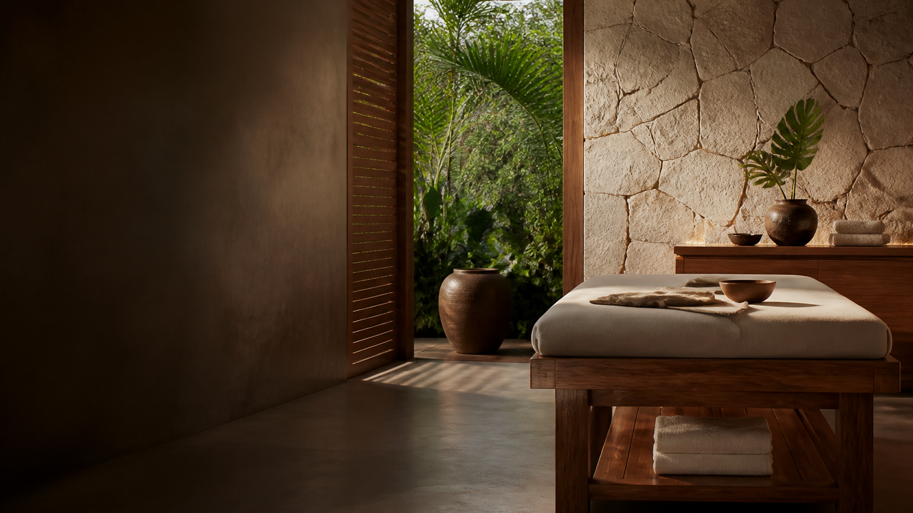

Lomi Lomi
Una práctica corporal que invita a soltar el ritmo y recuperar una sensación de bienestar.

Un espacio para volver al equilibrio con escucha, presencia y una atención dedicada a tu bienestar.
Agendar una consultaEsta propuesta presenta una experiencia clara desde el primer vistazo: explica el enfoque, transmite serenidad y convierte cada visita en una conversación directa por WhatsApp.
El contenido final puede ajustarse a la información, fotografías y forma de trabajo de Ka Pono.
Una presentación breve y ordenada ayuda a que cada persona entienda por dónde empezar.
Una práctica corporal que invita a soltar el ritmo y recuperar una sensación de bienestar.
Un momento de atención consciente pensado para acompañar el descanso y la conexión corporal.
Un enfoque restaurativo que puede explicarse con detalle antes de coordinar la sesión.
El sitio guía a cada visitante sin complicaciones y permite resolver sus dudas desde el canal más cercano: WhatsApp.
Escribinos por WhatsApp para conocer las sesiones, resolver dudas y coordinar tu visita.
Escribir por WhatsApp